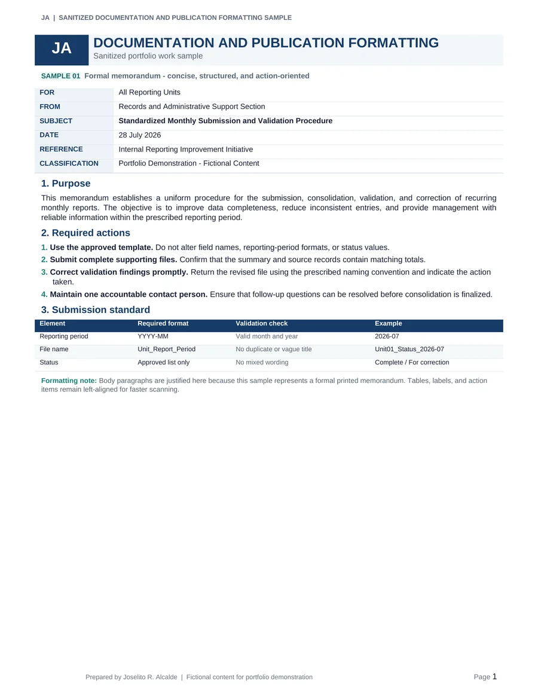
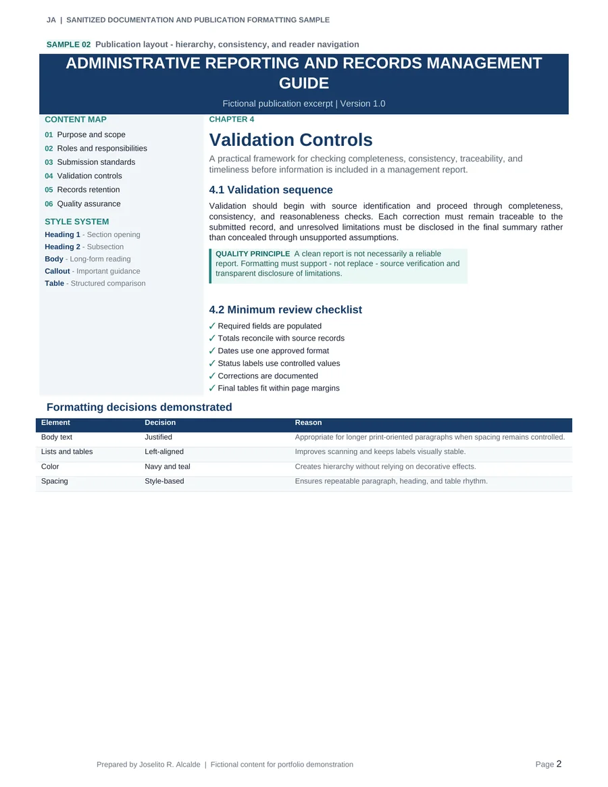
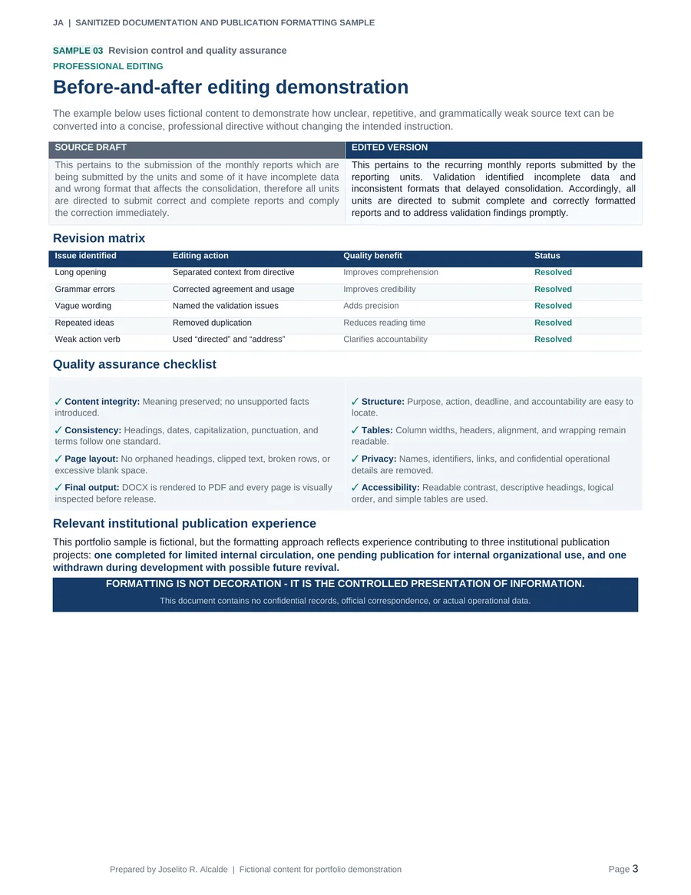

Structure
Place context, purpose, instructions, deadlines, accountability, and references where readers can find them quickly.
Sanitized Work Sample · Professional Documentation
A privacy-safe demonstration of turning raw source material into clear, consistent, professionally formatted documents through structured editing, style control, revision tracking, and render-based final inspection.
The documentation challenge
Professional documents often begin as mixed source notes, repetitive paragraphs, inconsistent terminology, unstructured instructions, or revisions from several contributors. The work is to preserve the intended meaning while improving readability, traceability, and presentation.
Place context, purpose, instructions, deadlines, accountability, and references where readers can find them quickly.
Apply one standard for headings, dates, capitalization, terminology, spacing, tables, and page elements.
Correct language without changing meaning or introducing unsupported facts, claims, or conclusions.
Render the document, inspect every page, and correct clipping, broken rows, poor wrapping, or awkward page breaks before release.
Document-development workflow
The workflow separates content decisions from visual formatting and includes a final rendered-output inspection.
Gather source documents, required templates, references, and reviewer instructions.
Organize the purpose, background, actions, deadlines, supporting data, and appendices.
Improve grammar, clarity, concision, tone, transitions, and terminology while preserving meaning.
Apply defined styles, spacing, tables, callouts, headers, footers, and publication hierarchy.
Track revisions, resolve comments, verify sources, and confirm reviewer decisions.
Export to PDF, inspect every page visually, and correct layout defects before delivery.
Downloadable sanitized work sample
The sample PDF is fictional and designed specifically for public portfolio use.

Identity block, concise purpose, numbered actions, submission-standard table, and intentional alignment.

Content map, chapter hierarchy, callout, style system, checklist, and formatting-decision table.

Before-and-after text, revision matrix, privacy controls, accessibility checks, and release checklist.
Portfolio document
Three-page PDF · fictional content · no internal identifiers · designed for recruiter review
Before-and-after editing
This demonstration shows the difference between merely correcting grammar and performing structured professional editing.
This pertains to the submission of the monthly reports which are being submitted by the units and some of it have incomplete data and wrong format that affects the consolidation, therefore all units are directed to submit correct and complete reports and comply the correction immediately.
This pertains to the recurring monthly reports submitted by the reporting units. Validation identified incomplete data and inconsistent formats that delayed consolidation. Accordingly, all units are directed to submit complete and correctly formatted reports and to address validation findings promptly.
Formatting judgment
A formatting specialist does not apply one rule to every document. The sample deliberately uses different alignment and hierarchy decisions based on how each element is read.
Appropriate where longer paragraphs, stable page width, and controlled word spacing support a formal publication style.
Improves quick reading, avoids irregular word spacing, and performs better across screens and narrow layouts.
Keeps labels, values, and action items visually stable and easy to compare.
Navy and teal identify levels and callouts without competing with the information.
Relevant publication experience
The public case study does not reproduce those internal documents, but it reflects the editing, compilation, revision, and layout methods used.
Completed for limited internal circulation and distributed only to key personnel.
Ongoing internal publication intended exclusively for organizational use.
Withdrawn during development because of complexity, with possible future revival.
Release quality assurance
Text review alone does not reveal all layout problems. Final quality assurance includes a visual review of the exported pages.
Professional documentation support